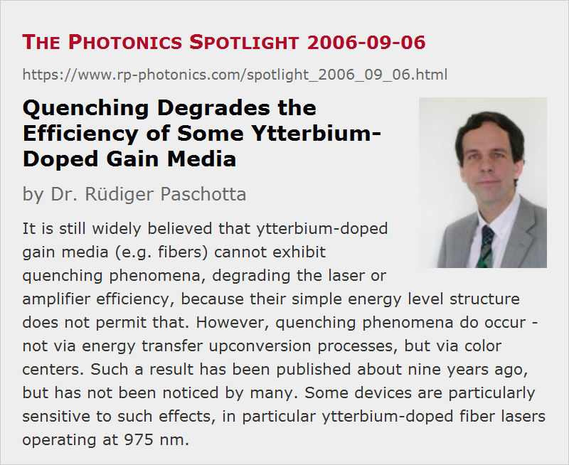

Quenching Degrades the Efficiency of Some Ytterbium-Doped Gain Media
Posted on 2006-09-06 as a part of the Photonics Spotlight (available as e-mail newsletter!)
Permanent link: https://www.rp-photonics.com/spotlight_2006_09_06.html
Author: Dr. Rüdiger Paschotta, RP Photonics Consulting GmbH
Abstract: It is still widely believed that ytterbium-doped gain media (e.g. fibers) cannot exhibit quenching phenomena, degrading the laser or amplifier efficiency, because their simple energy level structure does not permit that. However, quenching phenomena do occur - not via energy transfer upconversion processes, but via color centers. Such a result has been published about nine years ago, but has not been noticed by many. Some devices are particularly sensitive to such effects, in particular ytterbium-doped fiber lasers operating at 975 nm.

Ref.: R. Paschotta et al., “Lifetime quenching in Yb-doped fibres”, Opt. Commun. 136, 375 (1997); encyclopedia articles on quenching and ytterbium-doped gain media
The message has been endlessly repeated: one of the advantages of ytterbium-doped gain media is that their simple level scheme eliminates the possibility of quenching effects. A nice message, only it's wrong.
During my research in the Optoelectronics Research Centre in Southampton, UK, a colleague showed me a strange phenomenon: the output power of an ytterbium-doped fiber laser, pumped with a tunable titanium–sapphire laser, was highest when the pump wavelength was somewhat detuned from the wavelength of highest pump absorption in the fiber (around 975 nm). Having a simple but wrong hypothesis to explain this, he didn't care much about it. But I insisted that this shouldn't happen, and so we undertook some experiments which lead to a model of what is going on: some fraction of the ytterbium ions are strongly quenched – most likely by some color centers in the glass –, and the pump power absorbed by those ion is fully lost. When the pump wavelength is tuned to the maximum absorption, the “useful” pump absorption by non-quenched ions is strongly saturated, so that the “bad” absorption by quenched ions dominates, and the laser efficiency suffers. There is also some direct absorption caused by the color centers, but this effect is quite weak (although clearly detectable); an energy transfer from ytterbium ions to color centers makes the existence of the color centers much more detrimental. By the way, there appears to be no general reduction of fluorescence lifetime; only some fraction of the ions is quenched, while the others appear to be fine. Therefore, lifetime measurements cannot reveal the effect, even if it is strong.
It turned out that this phenomenon tends to be stronger in highly doped fibers, but without a systematic dependence on doping concentration. Yet unidentified fabrication details strongly influence the strength of the phenomenon. For some fiber lasers and amplifiers, quenching of a few percent of the ions doesn't really matter that much, while other devices are very sensitive – for example, fiber lasers emitting at 975 nm, as are useful to pump erbium-doped fiber amplifiers, can have a strongly degraded efficiency. Some heavily affected fibers even don't lase at all.
The first attempt to publish our technologically important finding failed: the reviewers used by Optics Letters denied the importance, based on the fact that quenching phenomena in rare-earth-doped fibers are well known (but not for ytterbium-doped media!) and that the exact cause has not been identified with certainty (but it matters anyway!). So we finally got it published in Optics Communications (see the reference above), which however receives less attention, so that many people still don't know about it nine years later. For that reason, others even brought up new explanations for similar findings, in particular the claim that such quenching behavior is strongly related to ytterbium ion pairs (see Kir'yanov et al., Opt. Express 14 (9), 3981 (2006)); see my comment in Opt. Express 14 (15), 6981 (2006). I suppose that the phenomenon has already puzzled quite a number of laboratories, and quite a few got onto wrong tracks, not being aware of the above mentioned publication.
This article is a posting of the Photonics Spotlight, authored by Dr. Rüdiger Paschotta. You may link to this page and cite it, because its location is permanent. See also the RP Photonics Encyclopedia.
Note that you can also receive the articles in the form of a newsletter or with an RSS feed.
Questions and Comments from Users
Here you can submit questions and comments. As far as they get accepted by the author, they will appear above this paragraph together with the author’s answer. The author will decide on acceptance based on certain criteria. Essentially, the issue must be of sufficiently broad interest.
Please do not enter personal data here; we would otherwise delete it soon. (See also our privacy declaration.) If you wish to receive personal feedback or consultancy from the author, please contact him e.g. via e-mail.
By submitting the information, you give your consent to the potential publication of your inputs on our website according to our rules. (If you later retract your consent, we will delete those inputs.) As your inputs are first reviewed by the author, they may be published with some delay.
|  |
If you like this page, please share the link with your friends and colleagues, e.g. via social media:
These sharing buttons are implemented in a privacy-friendly way!